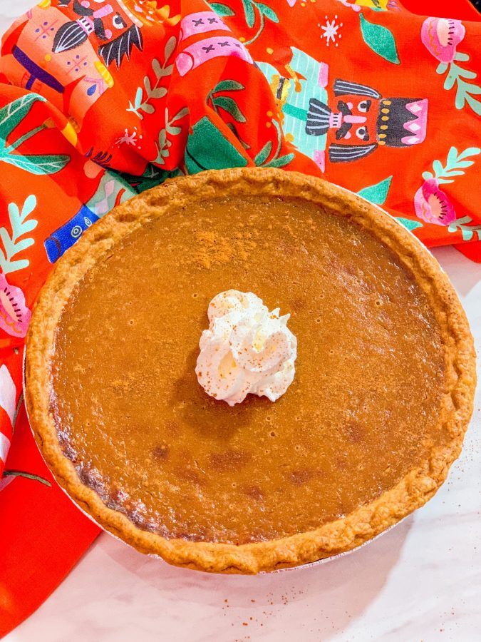

Sweet Potatoe Pie

Every Southern sweet potato pie is not a Black folks’ sweet potato pie. Unless made with a flawless blend of soul food sweet and savory spices and fresh sweet potatoes!
Black folks are known for their unique sweet potato pie recipe. Creamy and decadent comfort food at its finest!
Ingredients
- 1 ½ pound of sweet potatoes, washed and scrubbed (equals about 3 cups when softened and peeled)
- 12 oz. evaporated milk, 1 can
- 1 cup of light brown sugar
- 2 large eggs
- 5 tablespoons of unsalted butter, melted (or vegan butter)
- 2 tablespoons of vanilla extract
- 1 teaspoon of ginger, minced
- 1 teaspoon of ground nutmeg
- ½ teaspoon of ground cinnamon
- ½ teaspoon of ground cloves
- ¼ teaspoon of salt
Instructions
- Grease a 9-inch pie pan and set it aside.
- You can use a store-bought pie crust, dough, or pie shell that may or may not come with its own pie pan.
- Pro tip: Use an Instant Pot pressure cooker to soften and peel the sweet potatoes quickly and almost effortlessly!
- Open the Instant Pot lid and fill the stainless-steel inner pot with water to the ½ mark.
- Add the scrubbed sweet potatoes to the pot of water.
- Close the Instant Pot lid (make sure the valve is up – in the position for sealing) and pressure cook on high for 12 minutes to loosen the potato skin.
- When the cooking time is finished, allow a natural pressure release for at least 12 minutes.
- To open the Instant Pot lid, move the valve to ‘venting’ and manually release any remaining pressure, if applicable.
- Pour the water and sweet potatoes into a colander in the sink to drain the hot water from the potatoes.
- Once the sweet potatoes are cool to the touch, peel and discard the skin.
- Gather 3 cups of sweet potato flesh.
- Add to either the Instant Pot Ace blender or an electric mixer the sweet potato flesh, evaporated milk, brown sugar, egg, melted butter, vanilla extract, ginger, nutmeg, cinnamon, ground cloves, and salt.
- Pulse or mix until the ingredients are combined and smooth.
- Pour the sweet potato mixture into the pie crust.
- Bake the sweet potato pie at 350 degrees F: in a conventional oven for 28-30 minutes, in the Instant Pot Omni Plus oven for 24-26 minutes, or until the pie is puffed and firm in the center.
- Allow the sweet potato pie to cool for at least 30 minutes.
- Garnish with whipped cream and cinnamon sprinkled on top.
- Serve this Black folks’ sweet potato pie recipe warm and enjoy!
Home Page